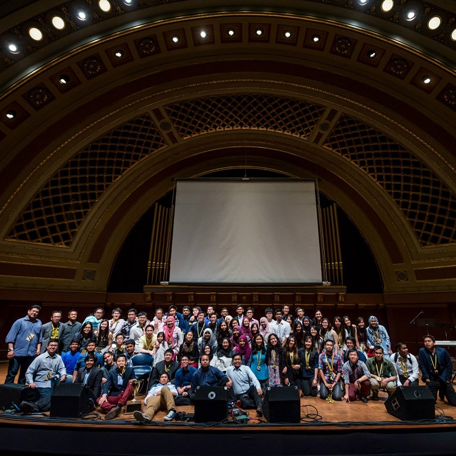
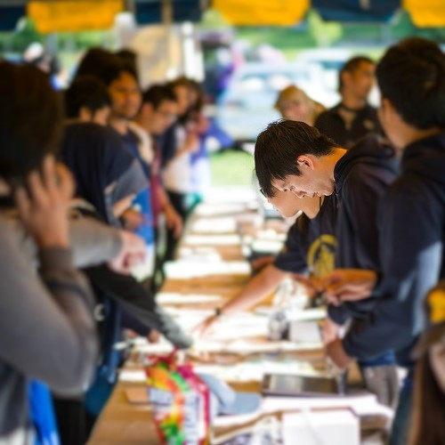
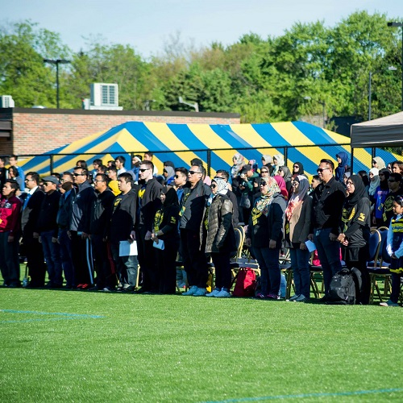
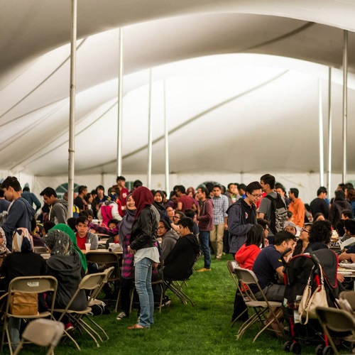

Malaysia Midwest Games Committee
Logistics Director, Check-in Co-director

Similar to the Summer Olympics, the Malaysia Midwest Games is a sporting event organized annually by Malaysian students in a specific university in the United States for Malaysian students nationwide. In October 2014, as representatives of University of Michigan Malaysian Students Association, the Malaysian Midwest Games Committee has succeeded in bidding to host the Malaysia Midwest Games 2015. The event that took place during the Memorial weekend in 2015 was a great success, with over 950 attendees from all over the United States and Canada.
Background
The Malaysia Midwest Games is an annual sporting event that aims to foster interactions and build relationships between Malaysians in the United States, especially students. Held during the Memorial weekend for almost 20 years, Malaysians nationwide have continuously participated in the largest Malaysian event in the States. At least 1000 participants travel across the States and Canada each year to compete in sports, and also to reunite with old friends and families.
Every year before, different universities compete to obtain the hosting rights for the Malaysia Midwest Games. Malaysian student organizations in the universities submit their intent and proposals to Education Malaysia Chicago (EM Chicago), a branch of the Ministry of Education designated to oversee the welfare of Malaysians in the United States. Once a university is announced as the successful bidder, the university's' students then proceed to prepare for the following year's Malaysia Midwest Games.
In October 2014, the Malaysian Midwest Games board committee from the University of Michigan has suceeded in bidding to host the Malaysia Midwest Games 2015. Formed during Summer 2014, the board committee aimed to make the event the best ever as well as set a high bar for future organizers. We worked restlessly to meet our established standards for months and were able to accomplish in being one of the most impressive hosts for the Malaysia Midwest Games so far.
My Work and Experience
   As the Logistics department director, my job scope ranges from venue reservation to transporting equipment, as well as purchase of merchandises like t-shirts and sporting medals. To ensure that the required tasks of the Logistics department were performed well, I gathered and assembled a team of five to work together, to whom I regularly distibute the responsibilities. Despite being the leader of the department, I shared my members' workload and coordinated logistical assignments. Specifically, our work as the Logistics department included ordering and shipping medals from China, purchasing event and committee t-shirts, purchasing banners, as well as transportation of equipment for non-sporting events which I oversaw.
Besides that, I work as the Check-in department's co-director for the Malaysia Midwest Games 2015. The Check-in department's role comprised of coordinating the participants' check-in during the start of the event, and obtaining the required materials (entrance passes, maps etc.) that were given out during the check-in. As a co-director, I took up the responsibility of ensuring the smooth flow of the check-in, since congestion and inefficiency were nagging issues for past Malaysia Midwest Games. I prepared floor plans and assigned booths that eased the flow of incoming participants to ensure the check-in process went smoothly, within the constraint of limited volunteers to man the booths. I also organized the check-in list that records essential information to accommodate the enormous volume of incoming participants, which eased the volunteers burden and further sped the check-in flow.
The entire process of organizing the event was tiring and draining, but it helped me hone my abilities to both work in a team as well as leading it. Furthermore, I understood the ethics and responsibilities of a leader better by working with my team members, and learnt to handle work related conflicts as well. I learnt to trust my team members more, and realized the importance of their inputs from different perspectives. Throughout the eight months, we encountered countless obstacles and worked persistently to solve it, which bore great fruit. I also established relationships and connections with the Malayisan community that was the main source of inspiration to the committee and the reason behind this event's success.